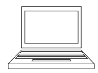

No-Waste is a goal and a process that involves individuals, communities, businesses and all levels of government. It leads to a future where trash is a thing of the past. Solid waste isn’t hidden or buried in landfills but fully utilised as the valuable resource that it is. Though redesign, reduction, reuse, repair, recycling, composting and changes in attitude, we aim to create opportunity and wealth instead of garbage.
Look at the description of Online tutors (A-E). Write
the appropriate
letter
A-E for each space.
Which tutor would you choose?
Choose ONE item only from the list below to go in each recycling container.
Look at the following statements.
YES if the answer is ‘yes’
NO if the answer is ‘no’
NOT GIVEN if there is no information
about this in
the passage.
Hotel management provides exciting career opportunities in the dynamic hospitality and tourism industry. Indeed, tourism is the world’s fastest growing industry. Recent figures show tourism enjoying a growth rate 23% higher than that of the global economy, employing some 212 million and earning in the region of $US3.4 trillion per annum. In the year from now, employment figures are predicted to exceed 338 million, with revenue above $US7.2 trillion. The vast majority of new jobs will be in the Asia –Pacific region, which by the year 2010 will attract 1 in every 5 of the world’s holidaymakers. The employment prospects for the International College of Hospitality Management’s graduates are exciting.
The International College of Hospitality Management provides diploma and degree level hotel management training for the international hospitality and tourism industry. Established in 1993, the International College of Hospitality Management is the Asia-Pacific Basin campus of the renowned European Hotel Association. It also incorporates the classical French cooking training of Le Gourmet, Paris.
The International College of Hospitality Management course is industry-oriented, balancing operative, supervisory and management level training. The Diploma course is 3 years full time. Semesters 1, 3 and 5 are spent studying on campus, and Semesters 2, 4 and 6 are spent in industry on undergraduate placements, called ‘stages’. One stage may be taken up with language studies.
Students who graduate with the International Hotel Management Diploma are assured of a further year of Degree Study at the University of the Antipodes. Studies will focus on such areas as: Global Marketing, Strategic Management, Total Quality Management, Cross-Cultural Communications, Developing Organizations and Management of Change, Global Development in Hospitality and Tourism, Intercultural Relations. Under certain circumstances the final year of study can be conducted on a part-time basis and by distance education mode, enabling students to study while maintaining a full-time career in the hospitality industry, either here or in their home country.
Choose ONE phrase from the list below (A-J) to complete
each of the
following
sentences.
There are more phrases than questions so you will not use all of them.
Look at the following statements.
Four short courses (A-D) from the ‘International Hotel Management
Diploma’
are
outlined on the opposite page. Choose the correct title (i-viii)
for each
course
from the list below.
There are more titles than descriptions so you will not use all of them.
Read the passage and answer the questions that follow.
Complete the sentences below using NO MORE THAN THREE WORDS FROM THE PASSAGE.
Which THREE of the following (A-I) in the passage have NOT been attributed to laughter?
Match the following names with a phrase (A-I) from the list below that describers the work of each